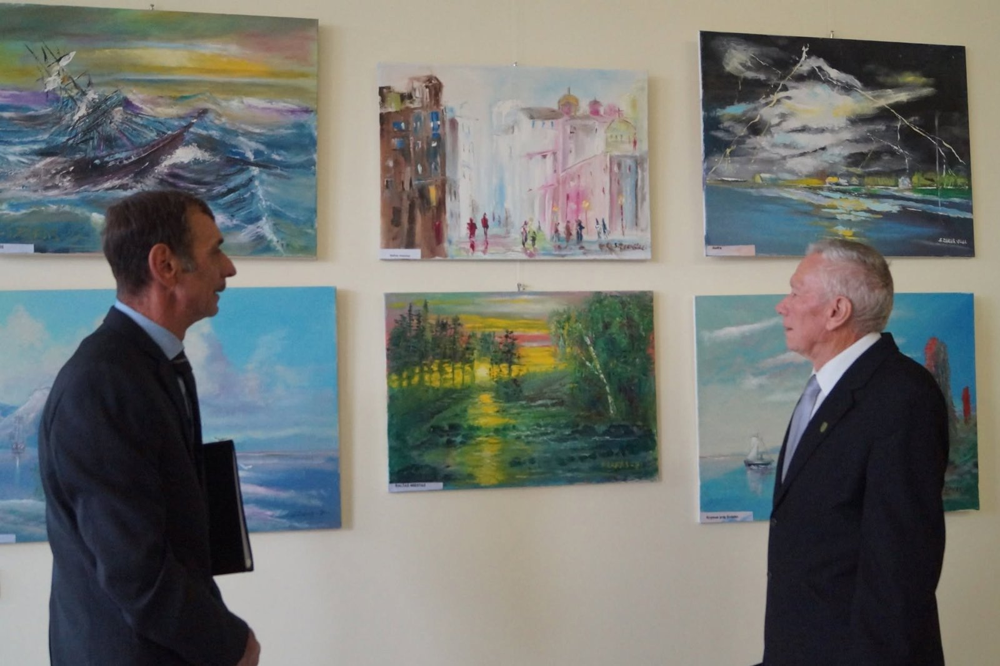
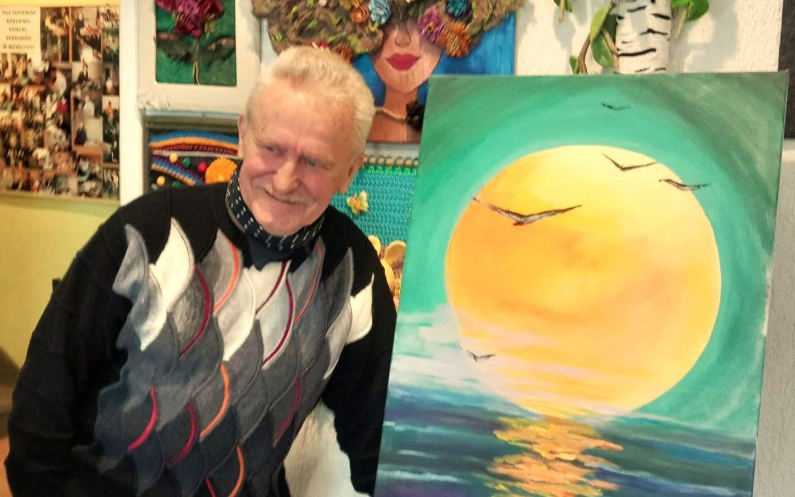
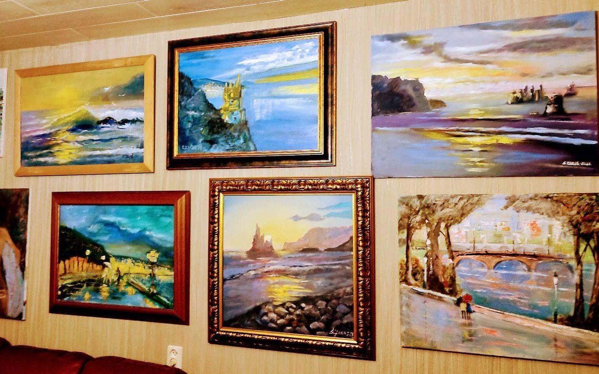

Rašau poeziją ir tapau, nes tai man patinka.
Technikos
Aliejus, akrilas, akvarelė, pastelė
Temos
Peizažai, jūra ir laivai, miestai, gėlės, portretai
Kelionių motyvai
Paryžius, Londonas, Venecija, Neapolis, Norvegija
Lietuvos vietos
Lėvuo, Nevėžio senvagė, Kuršių marios, Smiltynė



Parodos ir
renginiai
Tapybos darbų paroda
Raseinių Marcelijaus Martinaičio viešoji biblioteka, paveikslų galerija
Personalinė paroda
2025
„Menų magija“
Šilaičių menų festivalis
Festivalis
2026
„Vilties paukštė“
Tautos kankinių bažnyčia, Berčiūnai, Panevėžio r.
Sakralinės poezijos skaitymai
Autoriaus žodis
Sustabdžiau teptuku akvarelės,
Jūros muziką, saulę virš jų...
Mano mintys ją tokią prikėlė,
Iš seniai sustabdytų spalvų.
Jei didesnis kontrastas,- atleiskit,
Tom oranžinėm mano spalvom.
Tiktai vasaros dar man įpilkit
Į akis su putotom bangom...
Iš eilėraščio prie akvarelės „Saulėlydis“
Domina paveikslas? Parašykite.
Daugelį darbų galima įsigyti. Autorius taip pat mielai rengia parodas bibliotekose, kultūros centruose ir galerijose.
Susisiekti